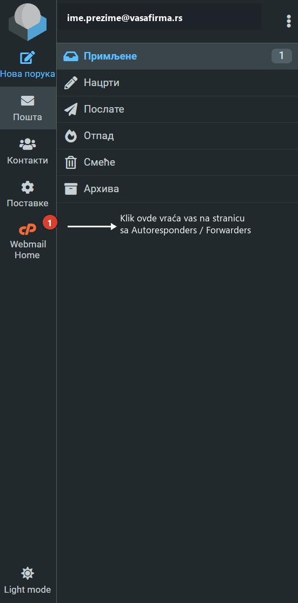
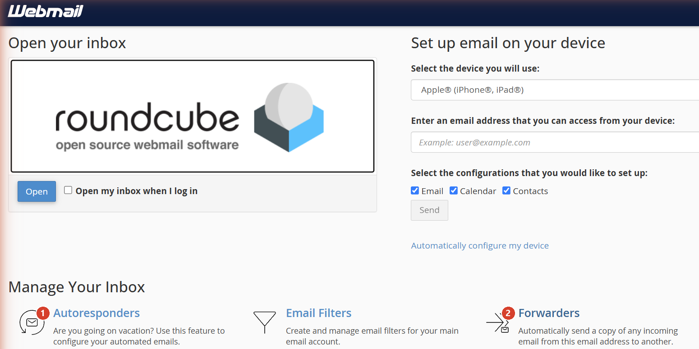
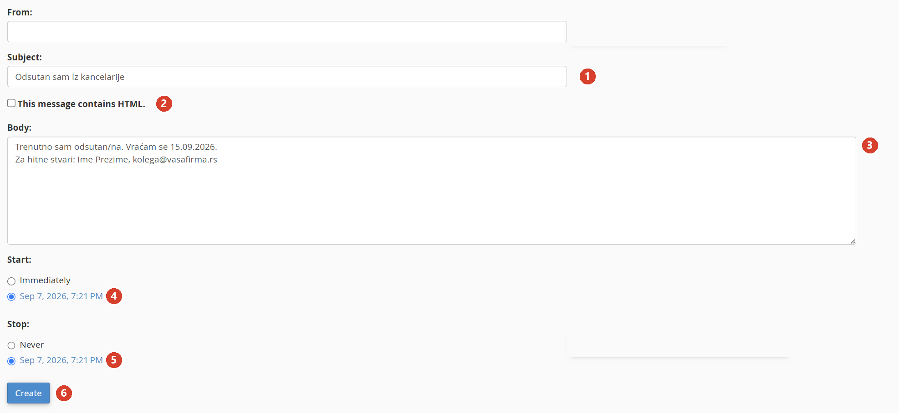
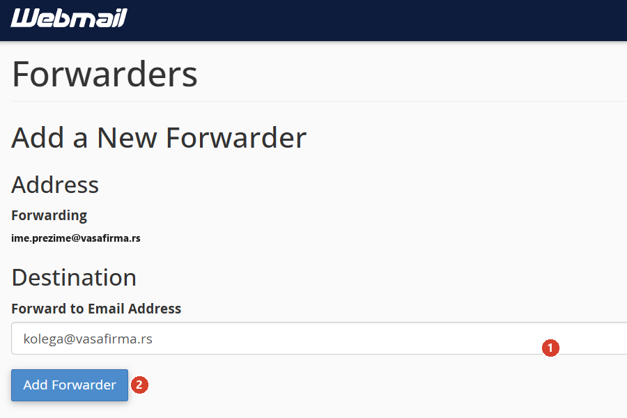

cPanel Webmail: Out of Office i prosleđivanje pošte¶
Uputstvo za dve stvari na mejlu: automatski odgovor za vreme odsustva (Out of Office) i prosleđivanje dolazne pošte na drugu adresu (forwarding). Odnosi se na firme čiji mejl je hostovan preko cPanel Webmail-a.
Pristup webmail-u¶
- Otvorite internet pregledač i idite na adresu koju vam je AJTI dao za vaš mejl (obično oblika
webmail.vasafirma.rs). - Unesite svoju mejl adresu i lozinku, zatim kliknite Log in.
Ako ste već ulogovani i gledate svoje mejlove
Ako se stranica koju vidite sastoji od foldera (Primljene, Poslate...) umesto od kvadrata sa opcijama, već ste u inbox-u, a ne na početnoj stranici sa podešavanjima. U levom donjem uglu kliknite na ikonicu Webmail Home (crveno-narandžasti "cP" krug) da se vratite na stranicu sa svim opcijama.

Deo 1: Automatski odgovor (Out of Office)¶
Korak 1. Otvorite Autoresponders¶
Na početnoj stranici, u sekciji Manage Your Inbox, kliknite na Autoresponders.

Korak 2. Dodajte automatski odgovor¶
Kliknite na dugme Add Autoresponder i popunite formu:
- Subject: naslov koji će primalac videti, na primer „Odsutan sam iz kancelarije".
- Body: tekst poruke, na primer „Trenutno sam odsutan/na. Vraćam se [datum]. Za hitne stvari kontaktirajte [ime i mejl kolege]."
- Polje From nije obavezno.
- This message contains HTML: ostavite neštiklirano, osim ako pravite poruku sa formatiranjem (bold, linkovi).
- Start: ostavite na Immediately da odgovor počne odmah čim sačuvate formu, ili izaberite Custom i unesite datum kada odsustvo počinje.
- Stop: izaberite Custom i unesite datum povratka na posao, da se odgovor sam isključi. Opcija Never znači da ostaje aktivan dok ga ručno ne obrišete.

Kliknite Create. Automatski odgovor je aktivan.
Preporuka
Uvek postavite datum na Stop, umesto Never. Tako se odgovor sam isključi kad se vratite i ne rizikujete da ostane upaljen mesecima.
Kako da isključite automatski odgovor ranije¶
Ako se vratite pre planiranog datuma, vratite se na stranicu Autoresponders, pronađite svoju poruku u tabeli Current Autoresponders i kliknite Delete u koloni Actions.
Deo 2: Prosleđivanje mejlova (Forwarders)¶
Korak 1. Otvorite Forwarders¶
Na početnoj stranici kliknite na Forwarders (slika iz Dela 1, desni kvadrat).
Korak 2. Dodajte prosleđivanje¶
Kliknite na dugme Add Forwarder, unesite adresu na koju želite da se prosleđuju mejlovi u polje Forward to Email Address, i kliknite Add Forwarder.

Važno
Prosleđivanje šalje kopiju svakog dolaznog mejla na drugu adresu. Originalna poruka i dalje ostaje u vašem inboxu, ne briše se i ne premešta. Da uklonite prosleđivanje, vratite se na stranicu Forwarders i kliknite Delete pored njega.
Ako imate poteškoća¶
Kontaktirajte nas: ajti.rs.